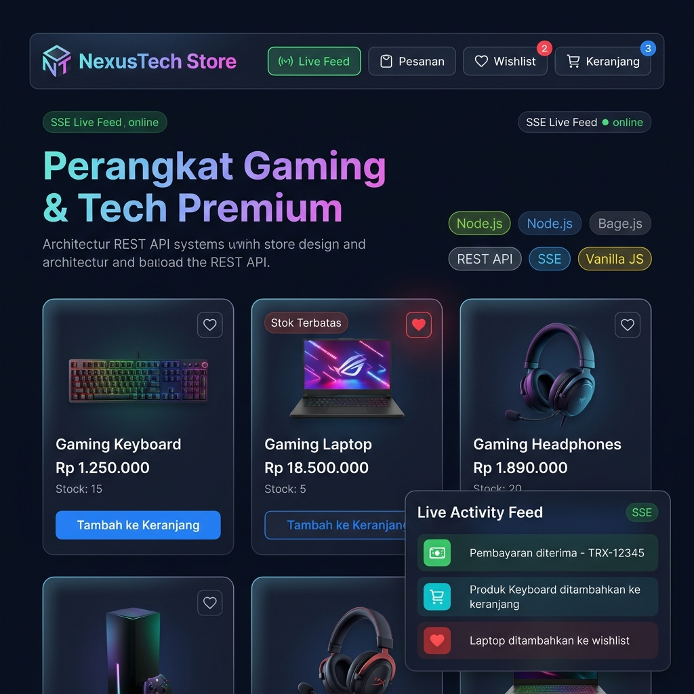
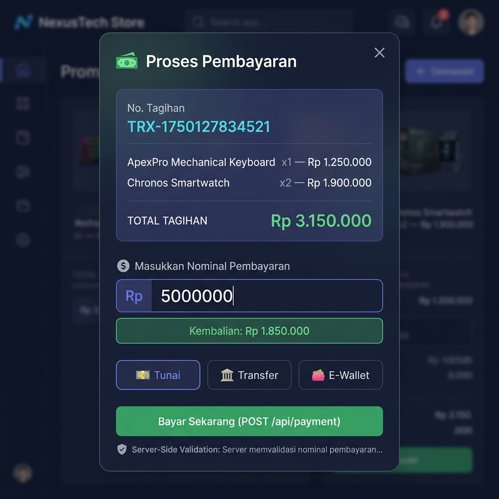
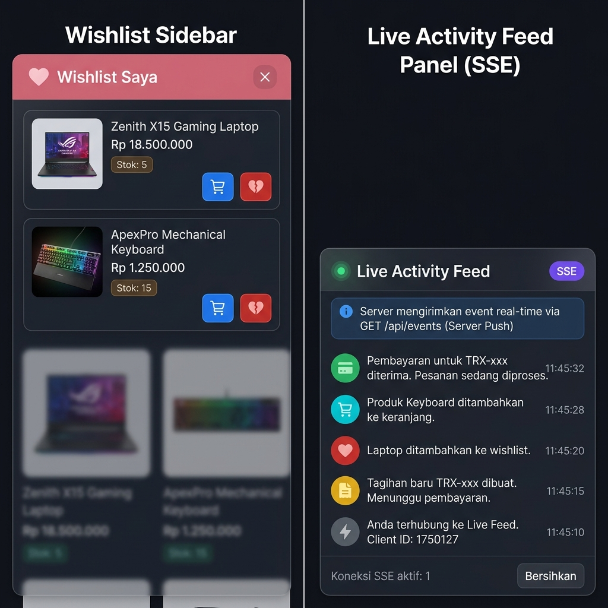
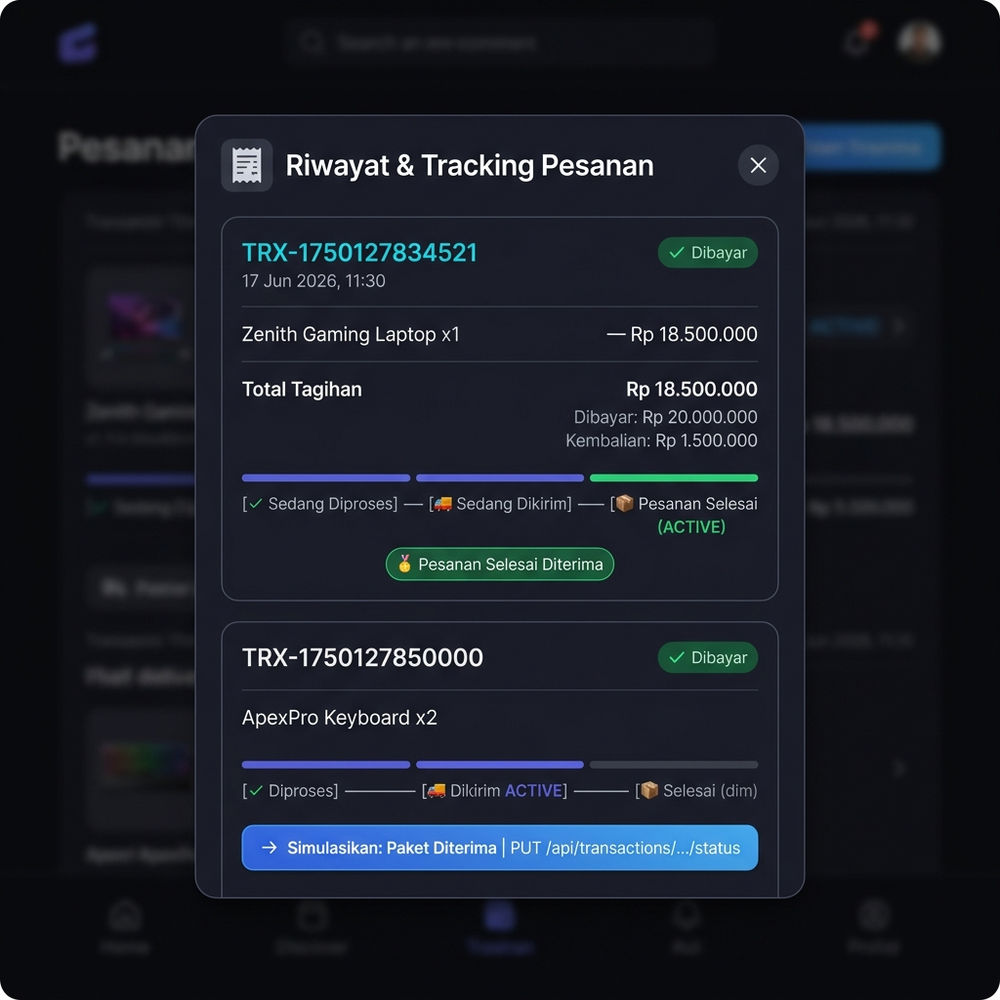
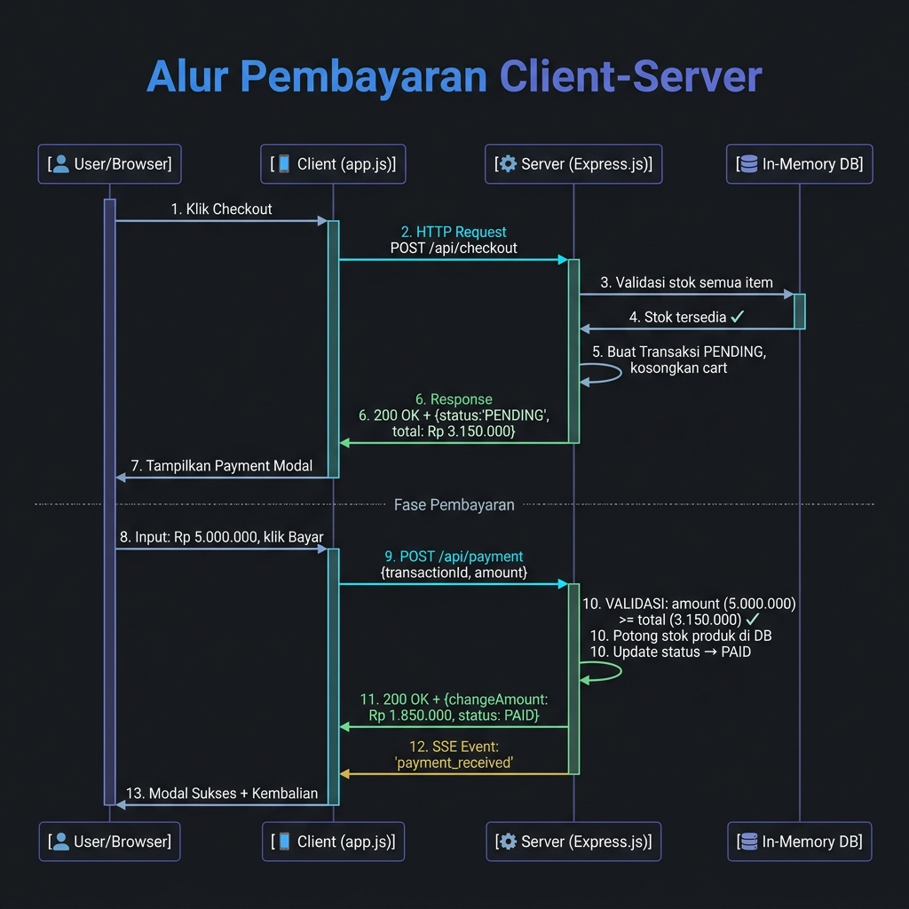

Aplikasi e-commerce seperti Shopee dan Tokopedia melayani jutaan transaksi per hari menggunakan arsitektur Client-Server terdistribusi yang canggih.
Untuk memahaminya secara mendalam, perlu dibangun simulasi nyata yang mencakup: manajemen katalog, keranjang belanja, payment gateway dengan validasi server-side, wishlist, order tracking, serta notifikasi real-time menggunakan Server-Sent Events (SSE).
REST adalah arsitektur stateless berbasis HTTP. Prinsip: Uniform Interface, pemisahan Client-Server, statelessness, cacheability (Fielding, 2000).
Node.js menggunakan model asinkron non-blocking I/O dengan event loop tunggal untuk mengelola ribuan koneksi tanpa overhead thread (Tilkov & Vinoski, 2010).
SSE adalah mekanisme Server Push satu arah via HTTP — server mengirimkan event ke client secara real-time tanpa client polling (W3C, 2021).
Mitigasi: validasi input server-side, pencegahan price-tampering, CORS, dan proteksi XSS pada rendering data dinamis (OWASP, 2023).
Sistem e-commerce bergantung pada manajemen state keranjang belanja, alur transaksi online, dan sinkronisasi inventori secara real-time (Laudon & Traver, 2021).
stock -= quantity) dilakukan secara sinkron di dalam thread utama tepat setelah validasi berhasil. Di produksi nyata Shopee/Tokopedia, digunakan penguncian database (Row-Level Locking) dan PM2 Cluster Mode untuk konkurensi skala masif.
/api/products — Katalog Produk/api/cart — Isi Keranjang/api/cart — Tambah ke Cart/api/cart/:id — Ubah Qty/api/cart/:id — Hapus Item/api/wishlist — Ambil Wishlist/api/wishlist — Tambah Wishlist/api/wishlist/:id — Hapus Wishlist/api/checkout — Buat Tagihan/api/payment — Bayar Tagihan ★/api/transactions/:id/status — Tracking/api/transactions — Riwayat/api/events — Live Feed (Server Push)
GET /api/products. Client tidak menyimpan state secara lokal — semua state dikontrol oleh Server.

transactionId + amount. Server memvalidasi: apakah amount ≥ total tagihan. Jika lolos → stok dipotong, status jadi PAID. Jika kurang → Error 400.

POST /api/wishlist.GET /api/events menggunakan EventSource API.
PUT /api/transactions/:id/status untuk memajukan status.trackingStatus ke tahap berikutnya dalam urutan yang ditentukan server (bukan client).order_status_updated ke semua client yang terhubung.
POST /api/checkout.POST /api/payment dengan amount.amount ≥ total. Jika gagal → Error 400.payment_receivedcart_updatedwishlist_updatedorder_status_updated
Ancaman: Client memodifikasi harga barang di payload HTTP Request sebelum checkout.
productId & quantity. Harga dihitung murni dari database server.
Ancaman: Client mengirim nominal pembayaran yang lebih kecil dari total tagihan untuk "membeli gratis".
amount >= total sebelum memproses. Jika kurang, server mengembalikan HTTP 400 dengan detail kekurangan.
Ancaman: Client mengirim multiple request untuk menambah produk yang sama ke wishlist.
HTTP 409 Conflict jika produk sudah ada. Client-side cache hanya sebagai UI hint.
| ID | Skenario Pengujian | Endpoint | Input | Hasil yang Diharapkan | Status |
|---|---|---|---|---|---|
| TC-01 | Muat katalog produk | GET /api/products |
Buka halaman | 5 produk tampil dengan harga & stok | ✓ PASS |
| TC-02 | Tambah produk ke wishlist | POST /api/wishlist |
Klik ikon ❤️ | Produk masuk wishlist, ikon hati jadi merah | ✓ PASS |
| TC-03 | Duplikasi wishlist | POST /api/wishlist |
Klik ❤️ produk yg sama 2x | Server: HTTP 409 Conflict — "Sudah ada di wishlist" |
✓ PASS |
| TC-04 | Checkout → PENDING | POST /api/checkout |
Klik "Checkout Sekarang" | Transaksi PENDING dibuat, keranjang kosong, stok belum terpotong | ✓ PASS |
| TC-05 | Bayar dengan nominal kurang | POST /api/payment |
Amount < Total Tagihan | Server: HTTP 400 — detail jumlah kekurangan |
✓ PASS |
| TC-06 | Bayar dengan nominal cukup | POST /api/payment |
Amount ≥ Total Tagihan | Status → PAID, stok terpotong, kembalian dihitung | ✓ PASS |
| TC-07 | Tracking: Kirim paket | PUT /api/transactions/:id/status |
Klik "Simulasikan Kirim" | Status PROCESSING → SHIPPED, SSE broadcast dikirim | ✓ PASS |
| TC-08 | SSE Live Feed terhubung | GET /api/events |
Buka halaman aplikasi | Indikator hijau ●Live muncul, event real-time tampil di panel | ✓ PASS |
| TC-09 | Data hilang saat restart server | — | Kill & restart server | Semua data transaksi & wishlist kembali kosong (volatil) | ⚠ KETERBATASAN |
| Fitur | Prinsip Client-Server yang Didemonstrasikan | Endpoint Kunci | Validasi Server-Side |
|---|---|---|---|
| Katalog & Keranjang | Stateless REST — setiap request independen, server menyimpan state | GET /api/products, POST /api/cart |
Cek stok saat tambah keranjang |
| Wishlist | Server sebagai single source of truth untuk state data | POST /api/wishlist |
Validasi duplikasi — HTTP 409 |
| Payment Gateway | Server-Side Validation — client tidak dipercaya untuk validasi bisnis | POST /api/checkout, POST /api/payment |
amount ≥ total; harga dari DB server |
| Order Tracking | State Machine di Server — urutan transisi dikontrol server | PUT /api/transactions/:id/status |
Status harus urut, tidak bisa lompat |
| Live Feed (SSE) | Server Push — server aktif mengirim event tanpa request client | GET /api/events |
Koneksi persisten; broadcast ke semua |
[1] Fielding, R. T. (2000). Architectural Styles and the Design of Network-based Software Architectures. Doctoral dissertation, University of California, Irvine.
[2] Tilkov, S., & Vinoski, S. (2010). Node.js: Using JavaScript to Build High-Performance Network Programs. IEEE Internet Computing, 14(6), 80–83.
[3] OpenJS Foundation. (2024). Node.js v20.x/v24.x Documentation. Diakses dari https://nodejs.org/docs/
[4] OWASP Foundation. (2023). OWASP API Security Top 10 — 2023. OWASP API Security Project.
[5] Haverbeke, M. (2018). Eloquent JavaScript: A Modern Introduction to Programming (3rd ed.). No Starch Press.
[6] Kurose, J. F., & Ross, K. W. (2021). Computer Networking: A Top-Down Approach (8th ed.). Pearson.
[7] Laudon, K. C., & Traver, C. G. (2021). E-commerce 2021: Business, Technology, Society (17th ed.). Pearson.
[8] W3C. (2021). Server-Sent Events — W3C Recommendation. Diakses dari https://www.w3.org/TR/eventsource/
git clone https://github.com/shadafifast/Ecomerce.git
Ecomerce/app/ di terminal.npm install
node server.js
http://localhost:3000